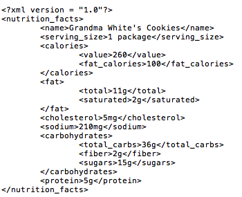
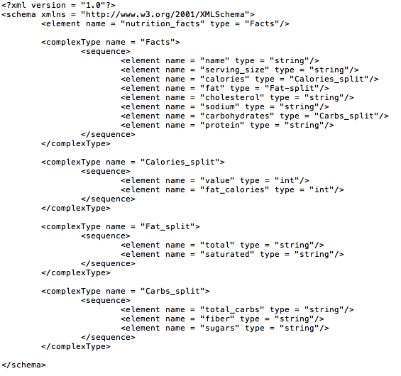

Chapter 15
Exercises
15.1
a, b, d, f are valid XML element names
15.2
a) true.
b) False. Markup text is delimited by tags enclosed in angle brackets with a forward slash just after the < in the end tag.
c) True.
d) True.
e) False. XML does support namespaces.
f) False. Document authors can use any valid name but should avoid ones that begin with the reserved word xml.
g) False. XML reserved characters include the ampersand (&), the left angle bracket (<) and the right angle bracket (>), but not # and $.
h) False. XML is case sensitive.
i) True.
j) False. DTDs use EBNF grammar, whish is not XML syntax.
k) False. XPath is a technology for locating information in an XML document. XML Schema provides a means for type checking XML documents and verifying their valididty.
15.3
a) Namespaces.
b) Processing instructions.
c) MSXML.
d) xsl:output.
e) schema.
f) xsl:stylesheet.
g) xsl:for-each.
h) parent.
i) sibling.
15.4
<date>
<month>May</month>
<day>5</day>
<year>2005</year>
</date>
15.5
<?xsl:stylesheet type = "text/xsl" href = "wap.xsl"?>
15.6
/letter/contact
15.7
nutrition.xml

15.8
